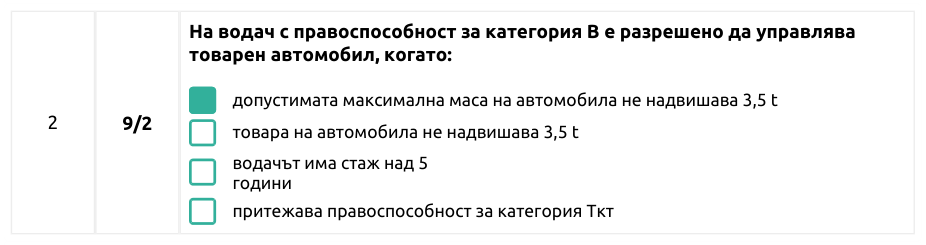
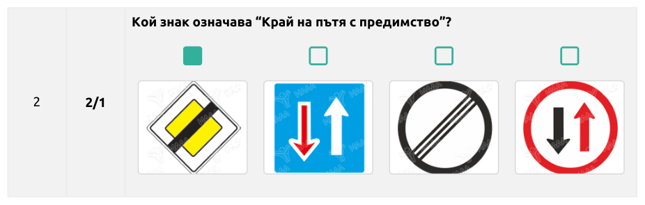
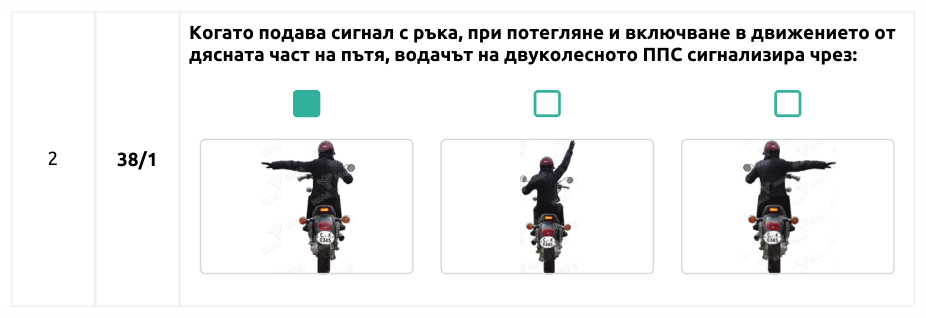
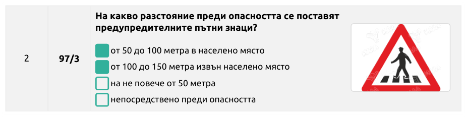
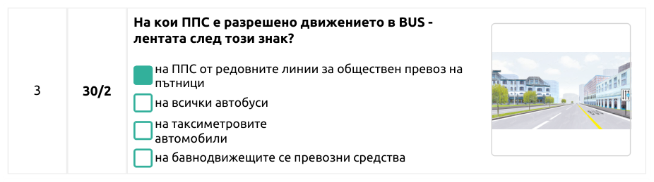
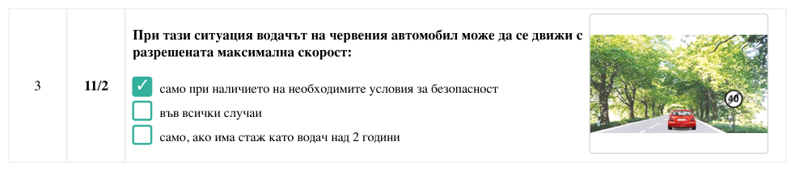
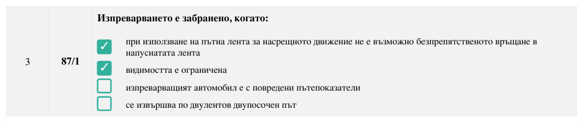
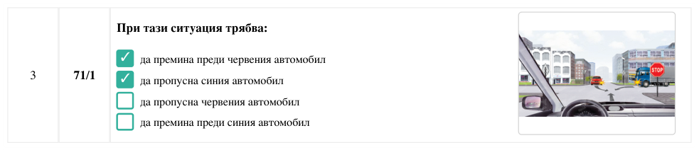
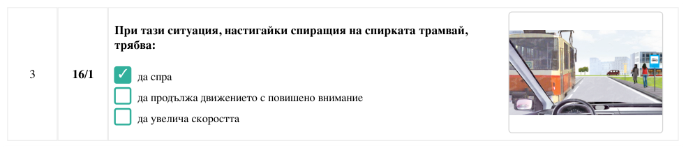
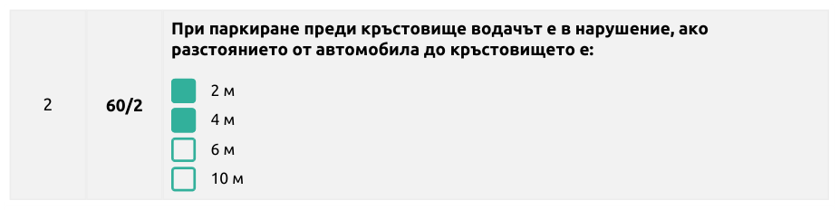

Дата: 13.06.2026. Повторный независимый прогон: PDF перепарсены с нуля, сверка с текущим questions.js.
✅ Болгарский текст: 1514 / 1514 вопросов совпадают с официальными PDF посимвольно —
тексты вопросов, тексты и количество ответов, баллы и отметки правильных ответов. Расхождений: 0.
✅ Русский перевод: покрытие 100% (1514 вопросов, 5069 ответов) —
все автопроверки пройдены, смысловая вычитка выборки из 57 вопросов по всем 19 темам ошибок не выявила.
✅ KV-оверрайды: 192 устаревшие текстовые правки удалены из прода —
текст больше не подменяется поверх questions.js (медиа-оверрайды сохранены).
1. Сверка с PDF по темам
Тема
Вопросов
Болгарский текст
Русский перевод
Тема 1
84
✓ 1:1 с PDF
✓ переведено
Тема 2
87
✓ 1:1 с PDF
✓ переведено
Тема 3
97
✓ 1:1 с PDF
✓ переведено
Тема 4
200
✓ 1:1 с PDF
✓ переведено
Тема 5
46
✓ 1:1 с PDF
✓ переведено
Тема 6
89
✓ 1:1 с PDF
✓ переведено
Тема 7
170
✓ 1:1 с PDF
✓ переведено
Тема 8
178
✓ 1:1 с PDF
✓ переведено
Тема 9
77
✓ 1:1 с PDF
✓ переведено
Тема 10
36
✓ 1:1 с PDF
✓ переведено
Тема 11
59
✓ 1:1 с PDF
✓ переведено
Тема 12
82
✓ 1:1 с PDF
✓ переведено
Тема 13
39
✓ 1:1 с PDF
✓ переведено
Тема 14
35
✓ 1:1 с PDF
✓ переведено
Тема 15
44
✓ 1:1 с PDF
✓ переведено
Тема 16
46
✓ 1:1 с PDF
✓ переведено
Тема 17
57
✓ 1:1 с PDF
✓ переведено
Тема 18
38
✓ 1:1 с PDF
✓ переведено
Тема 19
50
✓ 1:1 с PDF
✓ переведено
Итого
1514
0 расхождений
0 пропусков
Метод: эталон извлечён из текстового слоя PDF по координатам таблиц (границы ячеек, чекбоксы-якоря,
заливка/галочка правильного ответа), сравнение детерминированное, посимвольное после нормализации пробелов.
2. Проверки русского перевода
Полнота: question_ru и text_ru заполнены у 100% записей, пустых — 0.
Числа и единицы: все числа, km/h, kW, cm³, тоннажи и метражи совпадают с болгарским оригиналом (0 расхождений).
Болгарские следы: поиск по болгарской лексике и графике («трябва», «защото», «ъ» внутри слов и т.п.) — 0 находок.
Непереведённые строки: 0 (5 ложных срабатываний — совпадающие формы вроде «велосипедиста», «категория Ткт»).
Согласование падежей с вопросом: сплошной скан конструкций («из-за:», «для:», «относится к:»,
«запрещено движение:», «преимущество имеет водитель:» и др.) — внесено 165 контекстных правок, после чего скан чистый.
Смысловая вычитка: стратифицированная выборка 57 вопросов (по 3 из каждой темы) — смысл, термины и правильные ответы соответствуют болгарскому оригиналу.
3. Доказательная галерея: PDF → BG → RU
12 случайных вопросов из разных тем. Рамка зелёным — правильный ответ (совпадает с отметкой в PDF).
Тема 1 — вопрос 9/2 (t1_9_2, PDF стр. 3)
Оригинал из PDF

В приложении — BG (= PDF посимвольно)
На водач с правоспособност за категория В е разрешено да управлява товарен автомобил, когато:
допустимата максимална маса на автомобила не надвишава 3,5 t
товара на автомобила не надвишава 3,5 t
водачът има стаж над 5 години
притежава правоспособност за категория Ткт
В приложении — RU (новый перевод)
Водителю с правами категории B разрешено управлять грузовым автомобилем, когда:
допустимая максимальная масса автомобиля не превышает 3,5 t
груз автомобиля не превышает 3,5 t
водитель имеет стаж более 5 лет
имеет права категории Ткт
Тема 2 — вопрос 2/1 (t2_2_1, PDF стр. 1)
Оригинал из PDF

В приложении — BG (= PDF посимвольно)
Кой знак означава “Край на пътя с предимство”?
Изображение 1
Изображение 2
Изображение 3
Изображение 4
В приложении — RU (новый перевод)
Какой знак означает "Конец дороги с преимуществом"?
Изображение 1
Изображение 2
Изображение 3
Изображение 4
Тема 3 — вопрос 38/1 (t3_38_1, PDF стр. 13)
Оригинал из PDF

В приложении — BG (= PDF посимвольно)
Когато подава сигнал с ръка, при потегляне и включване в движението от дясната част на пътя, водачът на двуколесното ППС сигнализира чрез:
Изображение 1
Изображение 2
Изображение 3
В приложении — RU (новый перевод)
Подавая сигнал рукой при трогании и включении в движение с правой стороны дороги, водитель двухколёсного ТС сигнализирует:
Изображение 1
Изображение 2
Изображение 3
Тема 4 — вопрос 97/3 (t4_97_3, PDF стр. 31)
Оригинал из PDF

В приложении — BG (= PDF посимвольно)
На какво разстояние преди опасността се поставят предупредителните пътни знаци?
от 50 до 100 метра в населено място
от 100 до 150 метра извън населено място
на не повече от 50 метра
непосредствено преди опасността
В приложении — RU (новый перевод)
На каком расстоянии до опасности устанавливаются предупреждающие дорожные знаки?
от 50 до 100 метров в населённом пункте
от 100 до 150 метров вне населённого пункта
не более чем на 50 метров
непосредственно перед опасностью
Тема 5 — вопрос 30/2 (t5_30_2, PDF стр. 7)
Оригинал из PDF

В приложении — BG (= PDF посимвольно)
На кои ППС е разрешено движението в BUS - лентата след този знак?
на ППС от редовните линии за обществен превоз на пътници
на всички автобуси
на таксиметровите автомобили
на бавнодвижещите се превозни средства
В приложении — RU (новый перевод)
Каким ТС разрешено движение по BUS-полосе после этого знака?
ТС регулярных линий общественной перевозки пассажиров
всем автобусам
таксомоторным автомобилям
тихоходным транспортным средствам
Тема 6 — вопрос 11/2 (t6_11_2, PDF стр. 5)
Оригинал из PDF

В приложении — BG (= PDF посимвольно)
При тази ситуация водачът на червения автомобил може да се движи с разрешената максимална скорост:
само при наличието на необходимите условия за безопасност
във всички случаи
само, ако има стаж като водач над 2 години
В приложении — RU (новый перевод)
При этой ситуации водитель красного автомобиля может двигаться с разрешённой максимальной скоростью:
только при наличии необходимых условий безопасности
во всех случаях
только если имеет стаж водителя более 2 лет
Тема 7 — вопрос 87/1 (t7_87_1, PDF стр. 17)
Оригинал из PDF

В приложении — BG (= PDF посимвольно)
Изпреварването е забранено, когато:
при използване на пътна лента за насрещното движение не е възможно безпрепятственото връщане в напуснатата лента
видимостта е ограничена
изпреварващият автомобил е с повредени пътепоказатели
се извършва по двулентов двупосочен път
В приложении — RU (новый перевод)
Обгон запрещён, когда:
при использовании полосы встречного движения невозможно беспрепятственное возвращение в покинутую полосу
видимость ограничена
обгоняющий автомобиль имеет неисправные указатели поворота
выполняется по двухполосной двусторонней дороге
Тема 8 — вопрос 71/1 (t8_71_1, PDF стр. 16)
Оригинал из PDF

В приложении — BG (= PDF посимвольно)
При тази ситуация трябва:
да премина преди червения автомобил
да пропусна синия автомобил
да пропусна червения автомобил
да премина преди синия автомобил
В приложении — RU (новый перевод)
При этой ситуации необходимо:
проехать раньше красного автомобиля
пропустить синий автомобиль
пропустить красный автомобиль
проехать раньше синего автомобиля
Тема 9 — вопрос 31/1 (t9_31_1, PDF стр. 7)
Оригинал из PDF
В приложении — BG (= PDF посимвольно)
На автомобилен път е забранено движението на:
мотопеди
трактори
леки автомобили с ремаркета
велосипеди
В приложении — RU (новый перевод)
На автомобильной дороге запрещено движение:
мопедов
тракторов
легковых автомобилей с прицепами
велосипедов
Тема 10 — вопрос 16/1 (t10_16_1, PDF стр. 4)
Оригинал из PDF

В приложении — BG (= PDF посимвольно)
При тази ситуация, настигайки спиращия на спирката трамвай, трябва:
да спра
да продължа движението с повишено внимание
да увелича скоростта
В приложении — RU (новый перевод)
При этой ситуации, догоняя останавливающийся на остановке трамвай, необходимо:
остановиться
продолжить движение с повышенным вниманием
увеличить скорость
Тема 11 — вопрос 13/1 (t11_13_1, PDF стр. 3)
Оригинал из PDF
В приложении — BG (= PDF посимвольно)
Каква трябва да бъде дължината на твърдата връзка при теглене на повредено МПС?
от 2 до 4 м
до 2 м
от 4 до 6 м
В приложении — RU (новый перевод)
Какой должна быть длина жёсткой сцепки при буксировке неисправного механического ТС?
от 2 до 4 м
до 2 м
от 4 до 6 м
Тема 12 — вопрос 60/2 (t12_60_2, PDF стр. 14)
Оригинал из PDF

В приложении — BG (= PDF посимвольно)
При паркиране преди кръстовище водачът е в нарушение, ако разстоянието от автомобила до кръстовището е:
2 м
4 м
6 м
10 м
В приложении — RU (новый перевод)
При парковке перед перекрёстком водитель совершает нарушение, если расстояние от автомобиля до перекрёстка составляет: